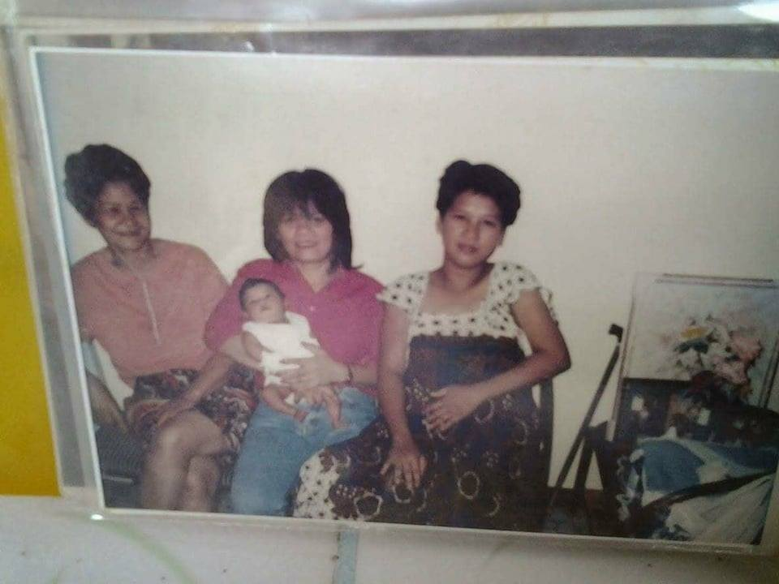
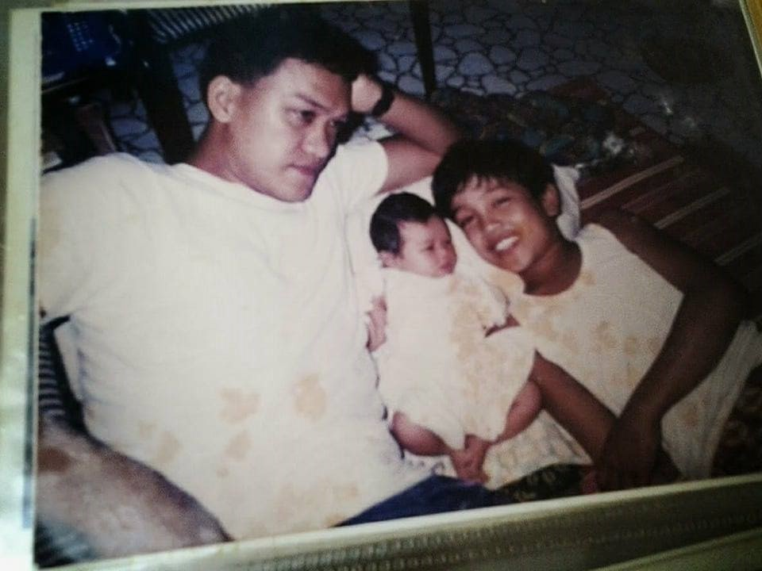
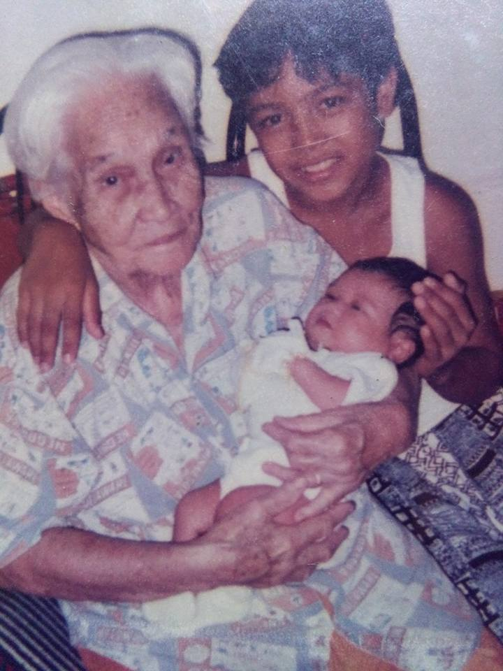

|

I was born on November 8, 1997. The first child of Gary De Los Santos and Flora De Los Santos. They said that my date of birth was filled with action. Not only because my mom went to the operating room for a caesarean section because of me but, also, my dad went to the operating room, too.
Here's the whole story.
During the ultrasound and all those procedures, my mom told me that I was in the right position until the day I was about to go out. I laid horizontally and my umbilical cord was wrapped around mt neck. So my mom has to go to operations. Well, the first hospital they went doesn't cater the c-section operation so my dad has to carry my mom to an ambulance to a new hospital and on the process, he injured his toes and was brought to the operating room together with my mom to have his own operation.
Hearing that story the first time made me laugh since they told me that both of them went to the nursery section on their perspective wheelchairs.
 
My great grandmother got a chance to held me before she passed away.
My name, Frances Anne was a combination of the name of my grandfathers which were, Francisco Soriano and Anecito De Los Santos. That's why when I was younger I thought that my name was unique but, now, I know it's not. Also, my last name is written differently from my parents. My last name in my birth certificate is written in two words, Delos Santos while my parent's, De Los Santos. But there's no big deal to it as per an attorney because it's just a space, not a spelling.
|